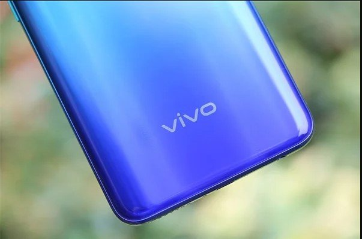

Baru-baru ini, smartphone Vivo yaitu Y76s terlihat pada lembaga sertifikasi China 3C, database IMEI, dan database CEIR. Dari salah satu daftar itu, menyebut Y76s bakal mendukung pengisian daya 18W ponsel, perangkat ini juga dapat mengisi daya dengan kecepatan pengisian 10W (5V, 2A). Dan sebelumnya beberapa informasi mengungkapkan, jika perangkat ini hanya mendukung 4G. Namun sekarang, berdasarkan sertifikasi TENAA mengonfirmasi jika smartphone terbaru dari Vivo itu ternyata sudah mendukung 5G.
